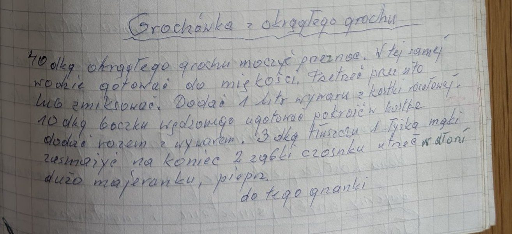

Grochówka z okrągłego grochu


Składniki
- 40 dkg okrągłego grochu
- 1 litr wywaru z kostki rosołowej
- 10 dkg boczku wędzonego
- 3 dkg tłuszczu
- 1 łyżka mąki
- 2 ząbki czosnku
- dużo majeranku
- pieprz
- grzanki
Przygotowanie
- Groch moczyć przez noc, w tej samej wodzie gotować do miękkości.
- Przetrzeć przez sito lub zmiksować.
- Dodać litr wywaru z kostki rosołowej.
- Boczek ugotować, pokroić w kostkę i dodać razem z wywarem.
- Z tłuszczu i łyżki mąki zrobić zasmażkę i dodać do zupy.
- Na koniec dodać 2 ząbki czosnku, dużo majeranku rozcieranego w dłoni i pieprz.
- Podawać z grzankami.
Oryginalny zapis
Grochówka z okrągłego grochu
40 dkg okrągłego grochu moczyć przez noc. W tej samej
wodzie gotować do miękkości. Przetrzeć przez sito
lub zmiksować. Dodać 1 litr wywaru z kostki rosołowej.
10 dkg boczku wędzonego ugotować pokroić w kostkę
dodać razem z wywarem. 3 dkg tłuszczu 1 łyżka mąki
zasmażyć na koniec 2 ząbki czosnku utrzeć w dłoni
dużo majeranku, pieprz.
do tego grzanki